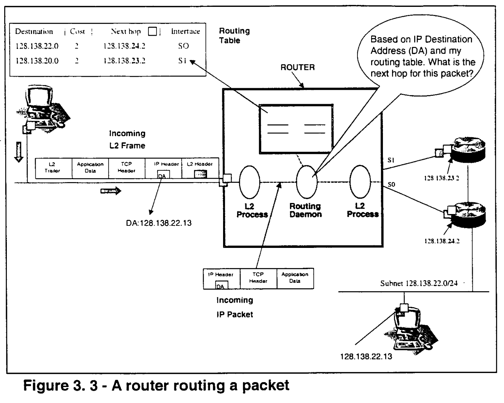

Master thesis in Telecommunications
A Comparative Analysis of Inter-domain multicast routing protocols
by Alejandro Avella
University of Colorado at Boulder
1998
Posted on December 1998

Avella, Alejandro Esteban (M.S., Telecommunications) A comparative analysis of inter-domain multicast routing protocols
Thesis directed by Professor Stanley E. Bush It has been suggested that further work is needed in the area of multicast routing and that an evaluation of current multicast routing protocols is encouraged [Deering-98, Deering-98c]. This thesis presents a comparison of the two most important proposals for Inter-Domain Multicast Routing (IDMR). Advantages and disadvantages of each protocol are pointed out and goals that a new proposal should meet are stated. Researchers have proposed many protocols for IDMR.The IETF has advanced two protocols to the experimental standard status: Core Based Trees (CT) [Ballardie-97] and Protocol Independent Multicast - Sparse Mode (PIM-SM) [Estrin-98]. The IETF hopes that the market wil decide which is the best solution, however ti does not provide criteria on how to compare the protocols. This thesis summarizes the key features of CBT and PIM-SM, and makes a comparison based on extensive criteria. Other recent proposals are introduced but only these two are compared.
The criteria used to compare the protocols are composed of five parts: protocol status, basic characteristics, technical criteria, operational criteria and overall assessment. More importance is given to the operational criteria, since this thesis simulates the type of analysis a network manager would do to compare the protocols. This thesis argues that the Protocol Independent Multicast - Sparse Mode (PIM-SM) proposal is the best solution currently available. This protocol should be chosen as the inter-domain multicast routing protocol to be deployed in the enterprise if a solution is needed immediately. However, it is also shown that neither PIM-SM nor CBT meet all the requirements of a good inter-domain multicast routing protocol. Specifically, the inability of scale (flooding and no aggregation) and lack of support of policies and heterogeneity are the main drawbacks of the protocols. This author argues that none of these protocols wil be the final solution adopted in the Internet. The Border Gateway Multicast Protocol [Kumar-98, Thaler-98] has started to move in the right direction and should be the protocol to watch in the near future. Download PDF